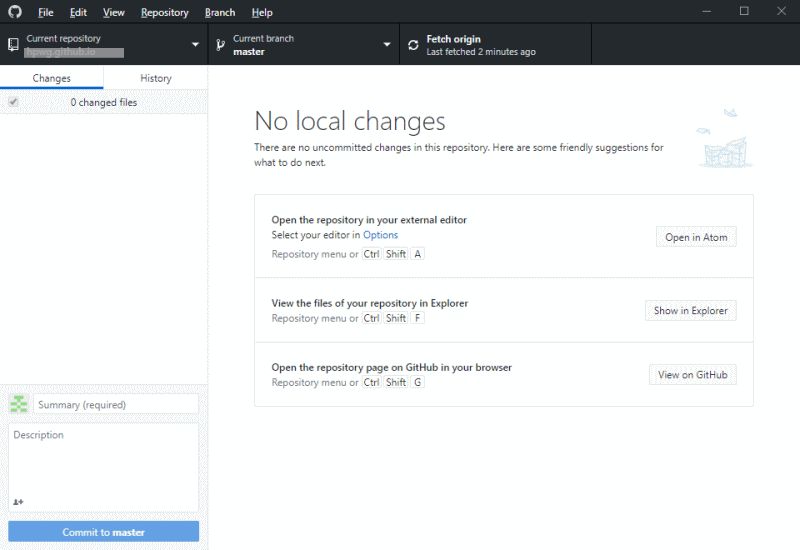

GitHubデスクトップアプリのインストール
GitHubリポジトリページ（https://github.com/ユーザー名/リポジトリ.io）で「Clone or download」ボンタを選択し、「Open in Desktop」をクリックします。ダウンロードしたGitHubDesktopSetup.exeを実行し、ウイザードに従ったインストールします。
GitHubにファイルをアップロード
「Clone a repository from intenet」ボタンをクリックします。ポップアップ画面で先に作成した「ユーザー名/リポジトリ.io」を選択し、「Local path」ボックスにコピーする場所を「Choose...」ボタンをクリックして選択します。「Clone」ボタンをクリックしクローンが作成します。
